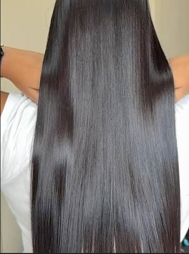
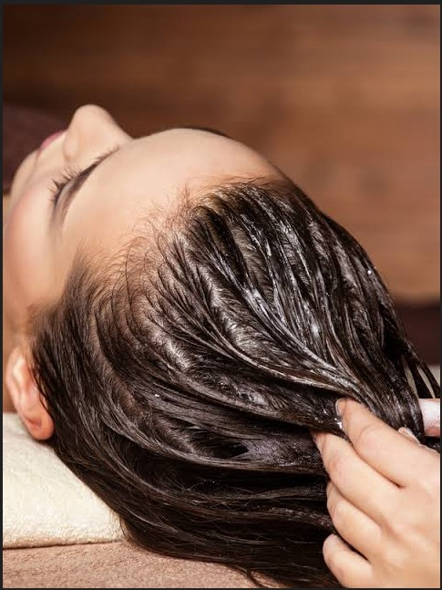
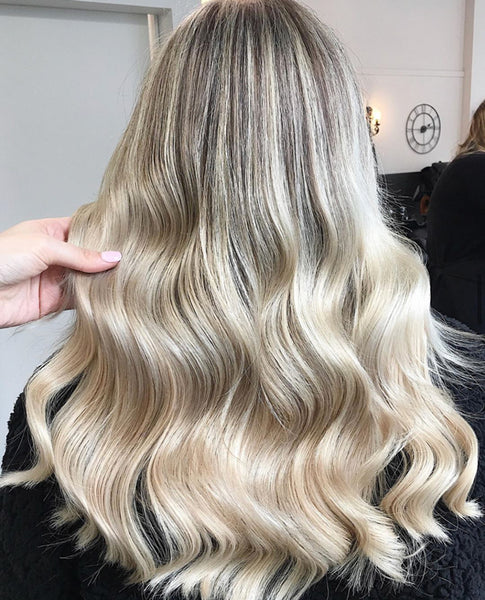

✨
Alisados y Cirugías
Elimina el frizz por completo, aportando hasta un 60% de hidratacion, dándole un brillo espejo duradero sin maltratar la hebra capilar.
- ✓ Cero formol
- ✓ Hidratación profunda
- ✓ Brillo y suavidad extrema
- ✓ Larga duración

💧
Nutrición Profunda
Tratamientos intensivos de hidratación y reconstrucción para cabellos sensibilizados por envejecimiento y procesos químicos.
- ✓ Sellado de puntas
- ✓ Reposición de aminoácidos
- ✓ Aporte de keratina
- ✓ Revitalización total

🎨
Colorimetría & Balayages
Diseños de color personalizados, técnicas de iluminación en tendencia y matizados perfectos.
- ✓ Diagnóstico de color previo
- ✓ Protección Plex en decoloración
- ✓ Tonos personalizados
- ✓ Cabellos más vivos